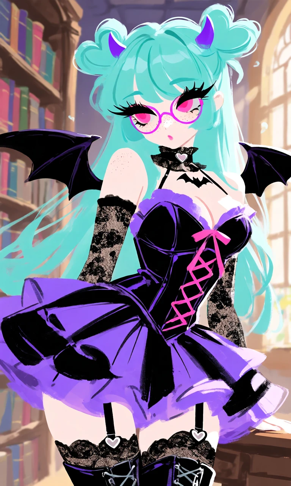
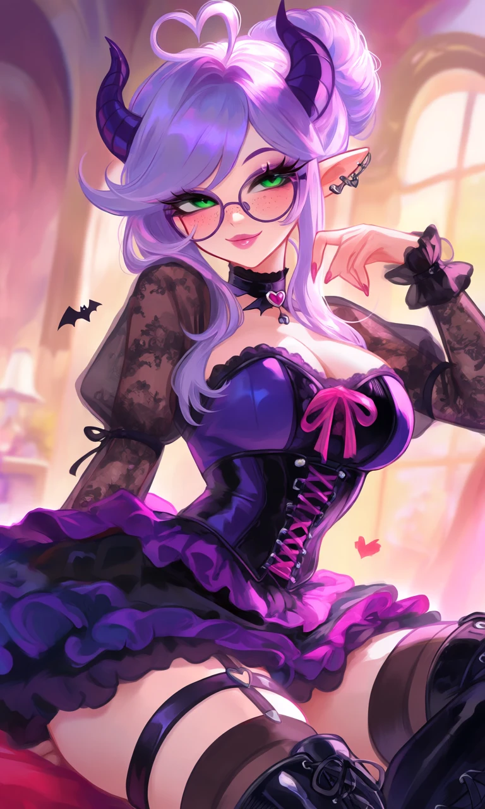

Bat My Heart

Outfit Prompt
Sexy-cute gothic outfit in pink, purple, and black. Black-and-purple corset top with pink ribbon lacing, low neckline, sheer black lace sleeves, short layered ruffled skirt, black thigh-high stockings with garters, black gothic boots, choker, and small bat and heart details.
Outfit Examples



